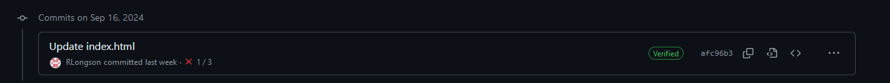
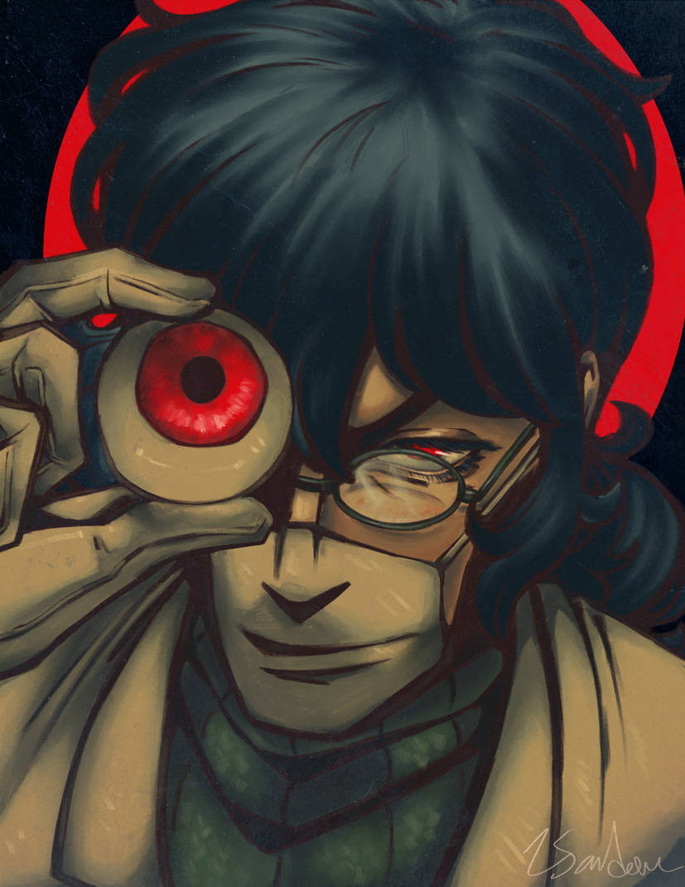
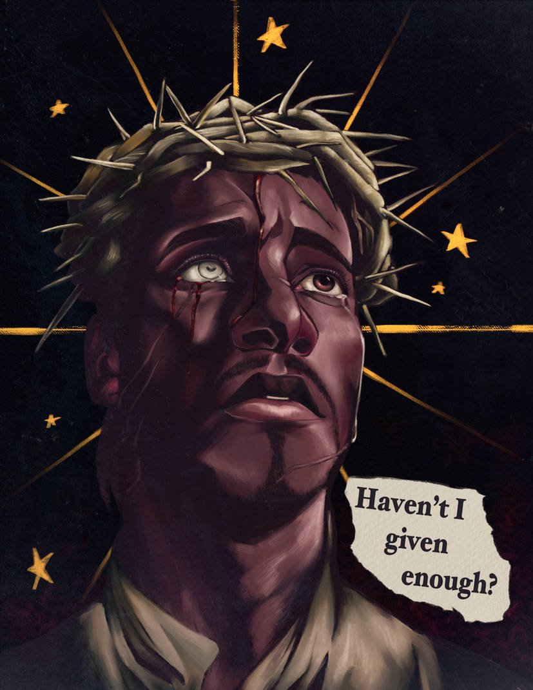
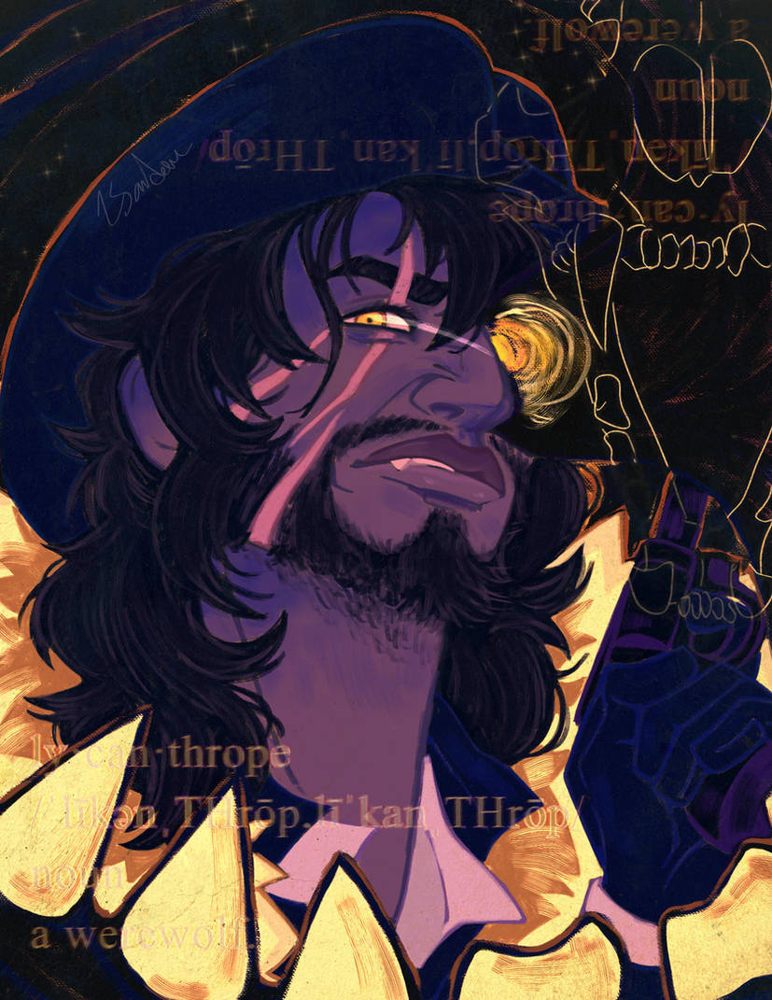
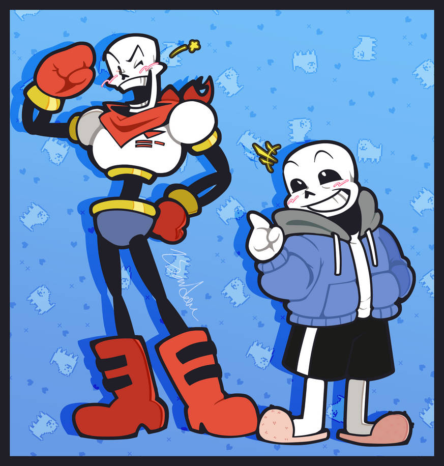

Hello!
I'm Rory!
I updated this 9/23/2024. I've also just noticed last week's failed to update

You might've noted by now that I'm very quiet and draw during class. That's pretty normal of me!
I have some experience in coding with python and C++, but barely any others.
This should also be my graduating year!
Hobbies!
- Art! Mainly digital, but I'm taking a class here too
- Graphic design
- Video games
- Dipped my toes into 3D modeling!
- There's a few RPGMaker work in progresses rotting on my PC too
Favorite Games!
- Dragon Age: Origins or 2 (I just finished the series)
- Red Dead Redemption 2
- Yakuza: Like a Dragon
- Baldur's Gate 3
- OFF (by Mortis Ghost)
Art I've done!
I get a lot of these finished in classes. I'm listening to the instruction, I just need something to do with my hands



